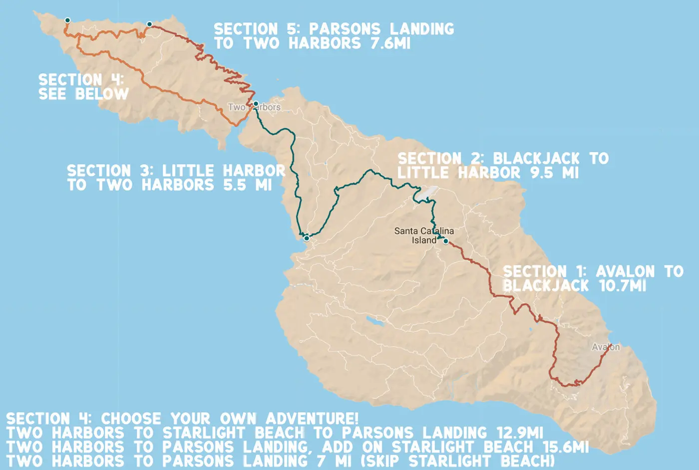

There are five campgrounds along the Trans-Catalina Trail all of which require reservations in advance through the Catalina Island Company. Traditionally, there is a two-night minimum stay required during their peak season although this requirement is waived for those who are intending to complete the Trans-Catalina Trail.
Hermit Gulch Campground
This is the first campsite along the trail and is located 1.5 miles from the Conservancy Trailhead in Avalon. Some hikers decide to stay here for a first night before deciding to embark on the whole trail. There are many amenities avaliable as there are tent sites as well as tent cabins avalaible with reservations.
Black Jack Campground
Another 10.5 miles from the Trailhead, approximately 9 miles from Hermit Gulch, is the Black Jack Campground. This campsite has 10 tent sites, chemical toilets, and cold outdoor spickets for shower-use and to fill up water reservoirs. There is also no open fires permitted at these sites.

Little Harbor and Shark Harbor Campgrounds
Nineteen miles from the Trailhead are the Little Harbor and Shark Harbor Campgrounds with 26 sites, outdoor showers, and beautiful beach access. There are also fires permitted on these sites. My favorite of all the campsites we stayed at.

Two Harbors Campground
Two Harbors campground is located 24 miles from the trailhead and a short walk from the city of Two Harbors. This campsite has a beautiful ocean view with beach access, cold water showers, and BBQs. There are also coin-operated warm showers located in town that many hikers choose to utilize.
Parson's Landing Campground
This is the final campsite along the trail and is located 30.8 miles from the trailhead in Avalon. This site is on a seculded beach with fire rings and no water available. Water and Firewood are available for purchase ahead of time and will be stored in lockers.